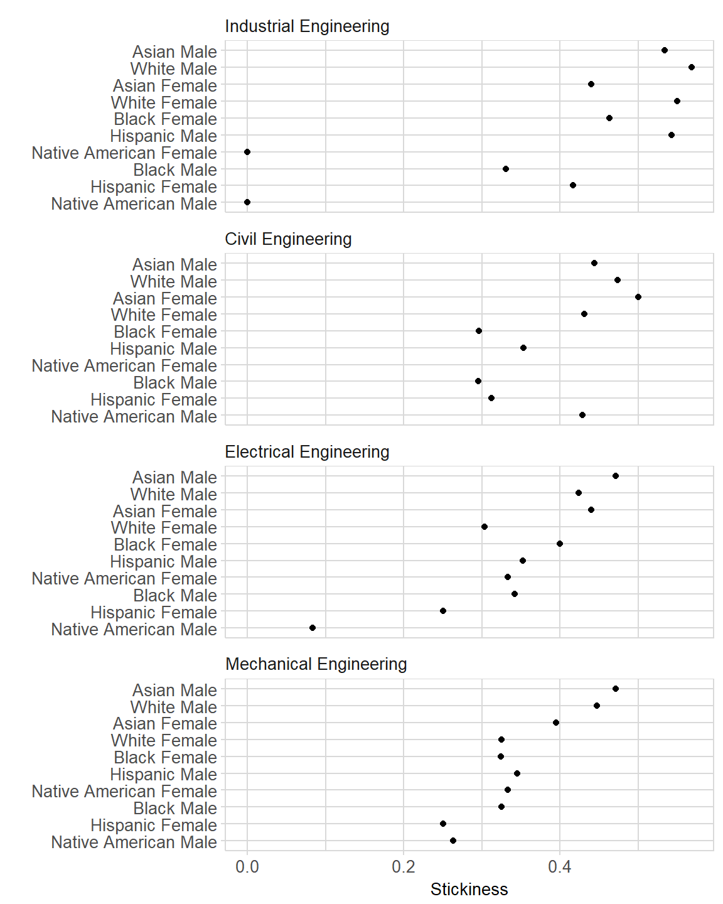

Longitudinal “stickiness” is the ratio of the number of students graduating in a program to the number of students ever enrolled in that program (Ohland et al. 2012).
Thus the stickiness metric accounts for all students a program had the most immediate opportunity to retain and graduate—the students were, after all, enrolled in the program at one time.
We typically group stickiness results by program, biological sex (we have no data on gender identity), and “race” as defined by the participating US institutions.
# packages used in this article
library(midfieldr)
library(dplyr)
library(tidyr)
library(tibble)
library(ggplot2)
library(knitr)
library(stringr)In this article, we show you how to use midfieldr functions to compute program stickiness. Our workflow is:
If you are an R beginner, you can get the most out of this tutorial by
For this example, we compare the stickiness of four engineering programs: Civil, Electrical, Industrial, and Mechanical. Their 4-digit CIP codes were found by keyword search as illustrated in Selecting CIP codes.
We use:
cip_filter() to obtain the relevant program codesadd_column() (a tibble function) to assign our own program label# obtain 6-digit CIP and assign a custom program label
cve <- cip_filter("^1408") %>% add_column(program = "Civil Engineering")
ele <- cip_filter("^1410") %>% add_column(program = "Electrical Engineering")
mce <- cip_filter("^1419") %>% add_column(program = "Mechanical Engineering")
ise <- cip_filter("^1435") %>% add_column(program = "Industrial Engineering")The program label is used for grouping and summarizing numbers of students.
Next we bind the individual program data frames into one data frame. We use two dplyr functions:
bind_rows() to bind the programs into one dataframe named program_group
select() to keep three variables: CIP6 for finding the desired student records, program for grouping, and CIP6name to check our custom program labels.# bind the programs
program_group <- bind_rows(cve, ele, mce, ise) %>%
select(CIP6, program, CIP6name)Examine the result: there are a total of 12 CIP codes for these programs. Our shorter program labels agree with the longer official CIP6name values.
# examine the result
program_group
#> # A tibble: 12 x 3
#> CIP6 program CIP6name
#> <chr> <chr> <chr>
#> 1 140801 Civil Engineering Civil Engineering - General
#> 2 140802 Civil Engineering Geotechnical Engineering
#> 3 140803 Civil Engineering Structural Engineering
#> 4 140804 Civil Engineering Transportation and Highway Engineering
#> 5 140805 Civil Engineering Water Resources Engineering
#> 6 140899 Civil Engineering Civil Engineering - Other
#> 7 141001 Electrical Engineering Electrical/Electronics and Communication~
#> 8 141003 Electrical Engineering Laser and Optical Engineering
#> 9 141004 Electrical Engineering Telecommunications Engineering
#> 10 141099 Electrical Engineering Electrical/Electronics and Communication~
#> 11 141901 Mechanical Engineering Mechanical Engineering
#> 12 143501 Industrial Engineering Industrial Engineeringgather_ever() extracts a subset of the midfieldterms data containing all unique students ever enrolled in the programs listed in program_group and joins our user-defined program labels to these data.
glimpse() (a tibble function) the result to check the number of observations and to view the first few values of each variable.
# examine the result
glimpse(students)
#> Observations: 10,846
#> Variables: 5
#> $ ID <chr> "MID25783178", "MID25783197", "MID25783388", "MID2...
#> $ institution <chr> "Institution M", "Institution M", "Institution M",...
#> $ CIP6 <chr> "143501", "140801", "141901", "140801", "141001", ...
#> $ program <chr> "Industrial Engineering", "Civil Engineering", "Me...
#> $ CIP6name <chr> "Industrial Engineering", "Civil Engineering - Gen...race_sex_join() accepts any data frame with the MIDFIELD student ID variable and joins the student race and sex from the midfieldstudents data to these data.
students <- race_sex_join(students)
glimpse(students)
#> Observations: 10,846
#> Variables: 7
#> $ ID <chr> "MID25783178", "MID25783197", "MID25783388", "MID2...
#> $ institution <chr> "Institution M", "Institution M", "Institution M",...
#> $ CIP6 <chr> "143501", "140801", "141901", "140801", "141001", ...
#> $ program <chr> "Industrial Engineering", "Civil Engineering", "Me...
#> $ CIP6name <chr> "Industrial Engineering", "Civil Engineering - Gen...
#> $ race <chr> "Black", "White", "White", "White", "White", "Whit...
#> $ sex <chr> "Male", "Male", "Male", "Male", "Male", "Male", "M...If the argument to race_sex_join() already includes a sex or race column, that column (or columns) is returned unchanged.
We will use dplyr functions to group and count the numbers of students ever enrolled in our programs.
group_by() to select the grouping variablessummarize() to count the number of students in each groupungroup() to remove the grouping meta-informationAll variables in students not used as grouping variables are quietly dropped. The assigned count variable is ever.
# count the numbers of students ever in a program
ever_enrolled <- students %>%
group_by(program, race, sex) %>%
summarize(ever = n()) %>%
ungroup()You can change how you group the data by changing the arguments of group_by().
This example has 4 programs, 2 sexes, and 8 race values, so we have 4 \(\times\) 2 \(\times\) 8 = 64 possible combinations of program, sex, and race, yet our result above has only 63 rows, not the expected 64. This outcome tells us that one of the possible combinations is missing.
The missing group, it happens, is Civil Engineering Native American Female.
zero_fill() inserts a count of zero for missing combinations, ensuring that zero data values are not overlooked when printing data tables or constructing graphs.
# count ever enrolled and label the count "ever"
ever_enrolled <- zero_fill(ever_enrolled)
# examine the result
ever_enrolled
#> # A tibble: 64 x 4
#> program race sex ever
#> <chr> <chr> <chr> <dbl>
#> 1 Civil Engineering Asian Female 22
#> 2 Civil Engineering Asian Male 54
#> 3 Civil Engineering Black Female 71
#> 4 Civil Engineering Black Male 132
#> 5 Civil Engineering Hispanic Female 16
#> 6 Civil Engineering Hispanic Male 85
#> 7 Civil Engineering International Female 2
#> 8 Civil Engineering International Male 22
#> 9 Civil Engineering Native American Female 0
#> 10 Civil Engineering Native American Male 7
#> 11 Civil Engineering Other Female 12
#> 12 Civil Engineering Other Male 32
#> # ... with 52 more rowsIn summary, the following chain gathers and counts the numbers of students ever enrolled in a set of programs.
gather_grad() extracts a subset of the midfielddegrees data containing the unique students ever graduating from the programs listed in program_group and joins our user-defined program labels to these data.
Similar to gathering the ever enrolled students, we can chain these functions together in one code chunk. Here, the assigned count variable is grad.
# count students graduating from programs
graduated <- gather_grad(program_group) %>%
race_sex_join() %>%
group_by(program, race, sex) %>%
summarize(grad = n()) %>%
ungroup() %>%
zero_fill()
# examine the result
glimpse(graduated)
#> Observations: 64
#> Variables: 4
#> $ program <chr> "Civil Engineering", "Civil Engineering", "Civil Engin...
#> $ race <chr> "Asian", "Asian", "Black", "Black", "Hispanic", "Hispa...
#> $ sex <chr> "Female", "Male", "Female", "Male", "Female", "Male", ...
#> $ grad <dbl> 11, 24, 21, 39, 5, 30, 1, 5, 0, 3, 1, 8, 1, 4, 192, 70...tally_stickiness() has two arguments: ever and grad data frames. The two data frames are joined by the variables they have in common.
The function returns a data frame with all the original variables plus a column for the stickiness variable stick. Stickiness is reported as a fraction between 0 and 1, or NA if the ever count for a group is zero.
stickiness <- tally_stickiness(ever = ever_enrolled, grad = graduated)
#> Joining, by = c("program", "race", "sex")
stickiness
#> # A tibble: 64 x 6
#> program race sex ever grad stick
#> <chr> <chr> <chr> <dbl> <dbl> <dbl>
#> 1 Civil Engineering Asian Female 22 11 0.5
#> 2 Civil Engineering Asian Male 54 24 0.444
#> 3 Civil Engineering Black Female 71 21 0.296
#> 4 Civil Engineering Black Male 132 39 0.295
#> 5 Civil Engineering Hispanic Female 16 5 0.312
#> 6 Civil Engineering Hispanic Male 85 30 0.353
#> 7 Civil Engineering International Female 2 1 0.5
#> 8 Civil Engineering International Male 22 5 0.227
#> 9 Civil Engineering Native American Female 0 0 NA
#> 10 Civil Engineering Native American Male 7 3 0.429
#> 11 Civil Engineering Other Female 12 1 0.083
#> 12 Civil Engineering Other Male 32 8 0.25
#> # ... with 52 more rowsBefore structuring the data for graphing, we select the populations we are interested in. For example, we might omit students for whom the “race” designation is ambiguous. This step could have been taken earlier, but must be taken (if at all) before using multiway_order().
We use filter() (a dplyr function) to keep all rows except those in which race is Unknown, International, or Other.
We structure the stickiness results as multiway data by combining student race and sex into a single race_sex variable. The Multiway article explains multiway data and graphs in detail.
We use:
mutate() (a dplyr function) to create a new variablestr_c() (a stringr function) to combine the race and sex stringsselect() (a dplyr function) to keep three variables only# create the race_sex variable
stickiness <- stickiness %>%
mutate(race_sex = str_c(race, sex, sep = " ")) %>%
select(program, race_sex, stick)
glimpse(stickiness)
#> Observations: 40
#> Variables: 3
#> $ program <chr> "Civil Engineering", "Civil Engineering", "Civil Engi...
#> $ race_sex <chr> "Asian Female", "Asian Male", "Black Female", "Black ...
#> $ stick <dbl> 0.500, 0.444, 0.296, 0.295, 0.312, 0.353, NA, 0.429, ...multiway_order() converts the character variables program and race_sex into factors and orders the levels of the two factors by the relevant stickiness medians. glimpse() shows that the two categorical variables are now factors.
# convert the data to a multiway structure
stickiness <- multiway_order(stickiness)
# multiway data comprise one quantitative and two categorical variables
glimpse(stickiness)
#> Observations: 40
#> Variables: 3
#> $ program <fct> Civil Engineering, Civil Engineering, Civil Engineeri...
#> $ race_sex <fct> Asian Female, Asian Male, Black Female, Black Male, H...
#> $ stick <dbl> 0.500, 0.444, 0.296, 0.295, 0.312, 0.353, NA, 0.429, ...By using multiway_order() to condition the data, the rows and panels of the multiway graph will be ordered by the appropriate medians. We use conventional ggplot2 functions applied to the stickiness data frame:
stick is the quantitative x-variablerace_sex is the y-variable forming the rows of the panelsprogram in facet_wrap() conditions the panelsas.table = FALSE places the panels in ascending order from bottom to topgeom_point() creates the data markers; any NA values are removed by na.rm = TRUE
labs() assign axis labelsggplot(stickiness, aes(x = stick, y = race_sex)) +
facet_wrap(~program, ncol = 1, as.table = FALSE) +
geom_point(na.rm = TRUE) +
labs(x = "Stickiness", y = "") +
midfield_theme()
We also apply our own midfield_theme() to edit the visual properties of the graph: axes, legends, panels, strips, etc. Learn more about ggplot2 themes here.